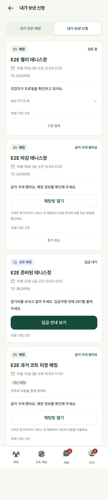

<!doctype html><html lang="ko"><meta charset="utf-8"><meta name="viewport" content="width=device-width,initial-scale=1"><title>Rally On · 신청 화면 개선</title><style>*{box-sizing:border-box}body{margin:0;background:#f7f8f2;color:#20372e;font-family:-apple-system,BlinkMacSystemFont,"Apple SD Gothic Neo",sans-serif}main{max-width:1080px;margin:auto;padding:36px 20px}h1{font-size:28px;letter-spacing:-1px;margin:8px 0 14px}p{color:#66776f;line-height:1.8;font-size:14px}nav{display:flex;gap:8px;flex-wrap:wrap;margin:24px 0}button{border:1px solid #d9e1d8;background:white;color:inherit;border-radius:999px;padding:12px 17px;font:inherit;cursor:pointer}button[aria-pressed=true]{background:#184e3b;color:white;border-color:#184e3b}.grid{display:grid;grid-template-columns:minmax(300px,390px) 1fr;gap:44px;align-items:start}.phone{height:min(78vh,812px);overflow:auto;border:1px solid #d9e1d8;border-radius:25px;background:white;box-shadow:0 20px 60px #143a2510}.phone img{width:100%;display:block}.note{padding-top:16px}h2{font-size:22px;line-height:1.5;letter-spacing:-.7px}.tag{display:inline-block;border-radius:8px;background:#eaf0e5;padding:7px 11px;font-size:12px;font-weight:600}footer{margin-top:30px;color:#78867b;font-size:12px;line-height:1.8}@media(max-width:700px){main{padding:24px 16px}.grid{grid-template-columns:1fr;gap:12px}.note{grid-row:1}.phone{width:min(100%,390px);margin:auto}h1{font-size:25px}}</style><main><span class="tag">Rally On · 신청 흐름</span><h1>어떤 신청인지, 지금 할 일은 무엇인지</h1><p>매칭과 코트 매칭을 명확히 구분하고, 철회 후 다시 신청할 수 있도록 개선했습니다.</p><nav aria-label="화면 선택"><button aria-pressed="true" data-key="sent">보낸 신청</button><button aria-pressed="false" data-key="payment">입금 대기</button><button aria-pressed="false" data-key="confirmed">참가 확정</button></nav><div class="grid"><div class="phone"></div><section class="note"><h2 id="heading"></h2><p id="copy"></p><p>화면 안에서 스크롤해 전체 내용을 확인할 수 있습니다.</p><span class="tag">테스트 계정의 실제 웹 렌더링</span></section></div><footer>디자인 확인용 정적 캡처입니다. 긴 화면 전체를 읽을 수 있도록 고정 메뉴와 버튼을 캡처에서만 맨 아래에 표시했습니다. 실제 앱에서는 하단에 고정됩니다.<br>실제 동작은 운영 웹과 업데이트된 iPhone 앱에서 확인할 수 있습니다. 이 캡처는 테스트 계정의 화면입니다.</footer></main><script>const views={sent:["매칭과 코트 매칭을 한눈에","유형 이름과 아이콘을 먼저 보여주고 오른쪽에는 신청 상태를 표시합니다. 코트 매칭의 승인·입금·확정을 구별하고, 필요한 행동으로 바로 이동합니다."],payment:["입금 기한과 다음 행동을 먼저","상태·참가비·기한을 먼저 확인한 뒤 계좌이체를 알립니다. 입금 알림 후에는 반복 이체를 유도하지 않도록 계좌와 수정 입력을 접습니다. 철회 후 재신청은 새 기록으로 남기며 이전 환불도 확인할 수 있습니다."],confirmed:["확정 후에는 장소와 연락으로","카카오 노란색 길찾기 버튼, 연락 가능한 운영자와 참가자 채팅을 먼저 찾을 수 있습니다. 취소·신청 당시 동의 내역은 아래에서 확인합니다."]};function show(key){document.querySelector('#screen').src='screens/application-'+key+'.png';document.querySelector('#screen').alt=views[key][0];document.querySelector('#heading').textContent=views[key][0];document.querySelector('#copy').textContent=views[key][1];document.querySelector('.phone').scrollTop=0;document.querySelectorAll('button').forEach(b=>b.setAttribute('aria-pressed',String(b.dataset.key===key)))}document.querySelectorAll('button').forEach(b=>b.onclick=()=>show(b.dataset.key));show('sent');</script></html>